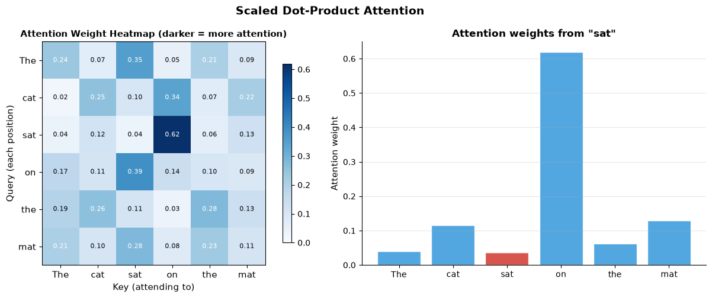
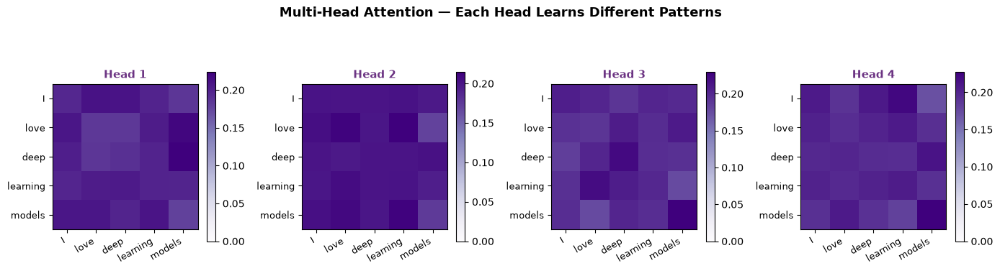
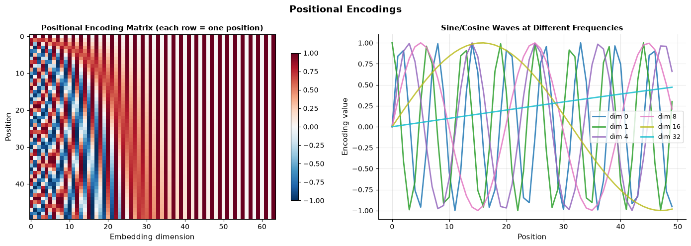
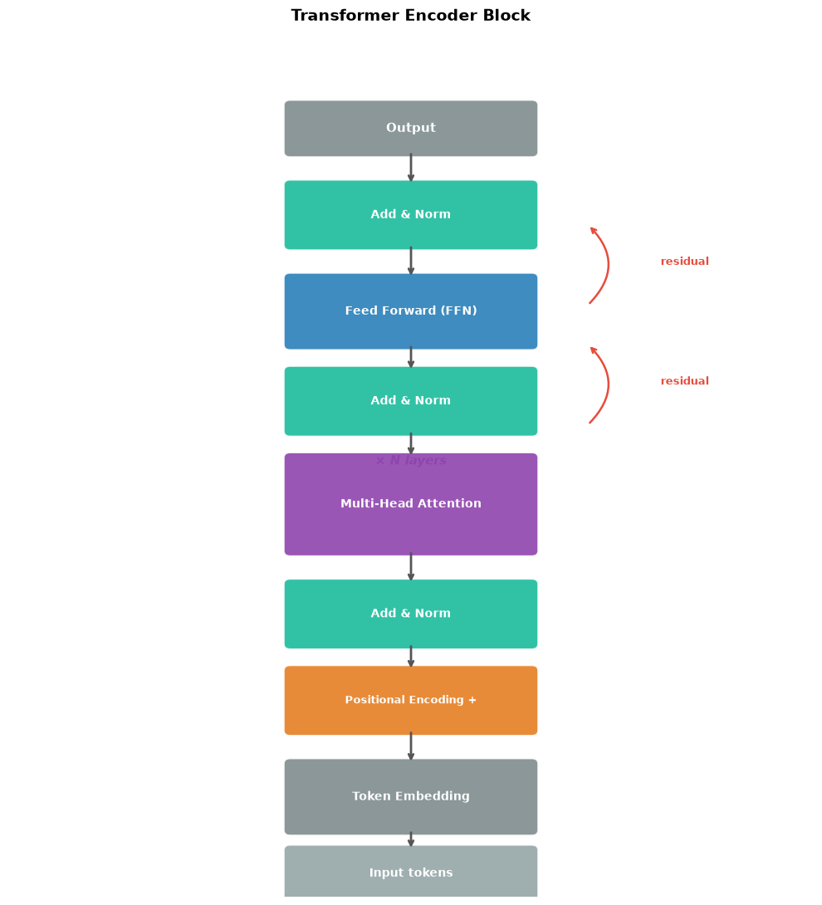

How does attention work?#
Topics: Attention Mechanism · Self-Attention · Multi-Head Attention · Positional Encodings · Transformer Architecture · BERT vs GPT
1. Attention Mechanism#
What it is#
Allows the model to focus on relevant parts of the input when producing each output
Computes a weighted sum of values, where weights reflect relevance to a query
Attention(Q, K, V) = softmax(QKᵀ / √d_k) · V
Components#
Query (Q) — what we’re looking for
Key (K) — what each position offers
Value (V) — the actual content to aggregate
Score — dot product of Q and K → how relevant each position is
Key intuition#
Translating “bank” in “river bank” vs “bank account” — attention looks at surrounding words
Each output position can attend to all input positions with learned weights
Weight = how much this input position should influence this output position
import numpy as np
import matplotlib.pyplot as plt
def softmax(x, axis=-1):
e = np.exp(x - x.max(axis=axis, keepdims=True))
return e / e.sum(axis=axis, keepdims=True)
def attention(Q, K, V):
d_k = Q.shape[-1]
scores = Q @ K.T / np.sqrt(d_k)
weights = softmax(scores)
output = weights @ V
return output, weights
np.random.seed(42)
seq_len, d_k = 6, 8
Q = np.random.randn(seq_len, d_k)
K = np.random.randn(seq_len, d_k)
V = np.random.randn(seq_len, d_k)
output, weights = attention(Q, K, V)
tokens = ['The', 'cat', 'sat', 'on', 'the', 'mat']
fig, axes = plt.subplots(1, 2, figsize=(13, 5))
# Attention weight heatmap
im = axes[0].imshow(weights, cmap='Blues', vmin=0, vmax=weights.max())
axes[0].set_xticks(range(seq_len))
axes[0].set_yticks(range(seq_len))
axes[0].set_xticklabels(tokens, fontsize=11)
axes[0].set_yticklabels(tokens, fontsize=11)
axes[0].set_xlabel('Key (attending to)', fontsize=11)
axes[0].set_ylabel('Query (each position)', fontsize=11)
axes[0].set_title('Attention Weight Heatmap (darker = more attention)', fontsize=11, fontweight='bold')
for i in range(seq_len):
for j in range(seq_len):
axes[0].text(j, i, f'{weights[i,j]:.2f}', ha='center', va='center',
fontsize=8, color='white' if weights[i,j] > 0.2 else 'black')
plt.colorbar(im, ax=axes[0], shrink=0.8)
# Attention from "sat" (position 2) to all other tokens
query_idx = 2
axes[1].bar(tokens, weights[query_idx], color='#3498DB', alpha=0.85, edgecolor='white')
axes[1].bar(tokens[query_idx], weights[query_idx][query_idx], color='#E74C3C', alpha=0.9, edgecolor='white')
axes[1].set_title(f'Attention weights from "{tokens[query_idx]}"', fontsize=12, fontweight='bold')
axes[1].set_ylabel('Attention weight', fontsize=11)
axes[1].grid(True, alpha=0.3, axis='y')
axes[1].spines['top'].set_visible(False)
axes[1].spines['right'].set_visible(False)
plt.suptitle('Scaled Dot-Product Attention', fontsize=14, fontweight='bold')
plt.tight_layout()
plt.savefig('attention_heatmap.png', dpi=120, bbox_inches='tight')
plt.show()

Interview Q&A#
Why divide by √d_k?
Large d_k → large dot products → softmax saturates → near-zero gradients
Dividing by √d_k keeps the variance of scores stable regardless of dimension size
What is masked attention?
In decoders: mask out future positions → model can only attend to past tokens
Implemented by adding -∞ to scores before softmax → attention weight becomes 0
Gotchas#
Attention is O(n²) in sequence length — slow for very long sequences
Keys and queries must have same dimension d_k, values can differ
2. Multi-Head Attention#
What it is#
Runs attention h times in parallel with different learned projections
Each head learns to attend to different aspects of the input
Outputs concatenated and projected back to model dimension
Key intuition#
Single attention head = one way of looking at relationships
Multiple heads = multiple perspectives simultaneously
Head 1 might focus on syntactic relations
Head 2 might focus on semantic similarity
Head 3 might focus on positional proximity
Formula#
MultiHead(Q,K,V) = Concat(head_1,...,head_h) · W_o
where head_i = Attention(Q·W_i^Q, K·W_i^K, V·W_i^V)
import numpy as np
import matplotlib.pyplot as plt
def softmax(x, axis=-1):
e = np.exp(x - x.max(axis=axis, keepdims=True))
return e / e.sum(axis=axis, keepdims=True)
def multi_head_attention(Q, K, V, n_heads, d_model):
d_k = d_model // n_heads
heads_output = []
head_weights = []
for h in range(n_heads):
Wq = np.random.randn(d_model, d_k) * 0.1
Wk = np.random.randn(d_model, d_k) * 0.1
Wv = np.random.randn(d_model, d_k) * 0.1
q = Q @ Wq
k = K @ Wk
v = V @ Wv
scores = q @ k.T / np.sqrt(d_k)
weights = softmax(scores)
out = weights @ v
heads_output.append(out)
head_weights.append(weights)
concat = np.concatenate(heads_output, axis=-1)
Wo = np.random.randn(d_model, d_model) * 0.1
return concat @ Wo, head_weights
np.random.seed(42)
seq_len, d_model, n_heads = 5, 8, 4
Q = np.random.randn(seq_len, d_model)
K = np.random.randn(seq_len, d_model)
V = np.random.randn(seq_len, d_model)
output, head_weights = multi_head_attention(Q, K, V, n_heads, d_model)
tokens = ['I', 'love', 'deep', 'learning', 'models']
fig, axes = plt.subplots(1, n_heads, figsize=(14, 4))
for idx, (ax, weights) in enumerate(zip(axes, head_weights)):
im = ax.imshow(weights, cmap='Purples', vmin=0, vmax=weights.max())
ax.set_xticks(range(seq_len))
ax.set_yticks(range(seq_len))
ax.set_xticklabels(tokens, fontsize=9, rotation=30, ha='right')
ax.set_yticklabels(tokens, fontsize=9)
ax.set_title(f'Head {idx+1}', fontsize=11, fontweight='bold', color='#6C3483')
plt.colorbar(im, ax=ax, shrink=0.7)
plt.suptitle('Multi-Head Attention — Each Head Learns Different Patterns', fontsize=13, fontweight='bold')
plt.tight_layout()
plt.savefig('multi_head_attention.png', dpi=120, bbox_inches='tight')
plt.show()
print(f"Output shape: {output.shape} (seq_len x d_model)")

Output shape: (5, 8) (seq_len x d_model)
3. Positional Encodings#
What it is#
Adds position information to token embeddings — attention itself is permutation invariant
Without it, “cat sat on mat” and “mat on sat cat” look identical to the model
Uses sine/cosine functions of different frequencies
Formula#
PE(pos, 2i) = sin(pos / 10000^(2i/d_model))PE(pos, 2i+1) = cos(pos / 10000^(2i/d_model))
Key intuition#
Each position gets a unique pattern of sine/cosine values
Different dimensions oscillate at different frequencies
The model can learn to use these patterns to infer relative positions
import numpy as np
import matplotlib.pyplot as plt
def positional_encoding(max_len, d_model):
PE = np.zeros((max_len, d_model))
pos = np.arange(max_len).reshape(-1, 1)
div = np.exp(np.arange(0, d_model, 2) * (-np.log(10000.0) / d_model))
PE[:, 0::2] = np.sin(pos * div)
PE[:, 1::2] = np.cos(pos * div[:d_model//2])
return PE
max_len, d_model = 50, 64
PE = positional_encoding(max_len, d_model)
fig, axes = plt.subplots(1, 2, figsize=(14, 5))
im = axes[0].imshow(PE, cmap='RdBu_r', aspect='auto', vmin=-1, vmax=1)
axes[0].set_xlabel('Embedding dimension', fontsize=11)
axes[0].set_ylabel('Position', fontsize=11)
axes[0].set_title('Positional Encoding Matrix (each row = one position)', fontsize=11, fontweight='bold')
plt.colorbar(im, ax=axes[0], shrink=0.8)
dims = [0, 1, 4, 8, 16, 32]
colors = plt.cm.tab10(np.linspace(0, 1, len(dims)))
for dim, color in zip(dims, colors):
axes[1].plot(PE[:, dim], color=color, linewidth=2, label=f'dim {dim}', alpha=0.85)
axes[1].set_xlabel('Position', fontsize=11)
axes[1].set_ylabel('Encoding value', fontsize=11)
axes[1].set_title('Sine/Cosine Waves at Different Frequencies', fontsize=11, fontweight='bold')
axes[1].legend(fontsize=9, ncol=2)
axes[1].grid(True, alpha=0.3)
axes[1].spines['top'].set_visible(False)
axes[1].spines['right'].set_visible(False)
plt.suptitle('Positional Encodings', fontsize=14, fontweight='bold')
plt.tight_layout()
plt.savefig('positional_encodings.png', dpi=120, bbox_inches='tight')
plt.show()

Interview Q&A#
Why sine/cosine for positional encodings?
Produces unique pattern for each position
Model can extrapolate to longer sequences than seen in training
Relative positions can be expressed as linear functions of the encodings
What is learned positional encoding?
Instead of fixed sine/cosine, learn position embeddings during training
Used in BERT and GPT — slightly better in practice but can’t extrapolate to longer sequences
Gotchas#
Positional encoding is added to token embedding, not concatenated → no dimension increase
For very long sequences, rotary position embeddings (RoPE) work better — used in LLaMA
4. Transformer Architecture#
What it is#
Architecture based entirely on attention — no recurrence or convolution
Encoder processes input, Decoder generates output
Each layer: Multi-Head Attention → Add & Norm → Feed-Forward → Add & Norm
Key components#
Encoder — maps input sequence to contextualized representations
Decoder — generates output sequence one token at a time using encoder output
Add & Norm — residual connection + layer normalization (stabilizes training)
Feed-Forward — two linear layers with ReLU in between (applied position-wise)
BERT vs GPT#
BERT |
GPT |
|
|---|---|---|
Type |
Encoder only |
Decoder only |
Training |
Masked Language Model |
Next token prediction |
Attention |
Bidirectional |
Causal (left-to-right) |
Best for |
Understanding (classification, NER) |
Generation (text, code) |
import numpy as np
import matplotlib.pyplot as plt
import matplotlib.patches as mpatches
fig, ax = plt.subplots(figsize=(10, 11))
ax.set_xlim(0, 10); ax.set_ylim(0, 13); ax.axis('off')
ax.set_title('Transformer Encoder Block', fontsize=14, fontweight='bold', pad=10)
def box(ax, x, y, w, h, label, color, fontsize=10):
rect = mpatches.FancyBboxPatch((x, y), w, h,
boxstyle='round,pad=0.08', facecolor=color, edgecolor='white',
linewidth=1.5, alpha=0.9)
ax.add_patch(rect)
ax.text(x+w/2, y+h/2, label, ha='center', va='center',
fontsize=fontsize, fontweight='bold', color='white')
def arr(ax, x1, y1, x2, y2, color='#555'):
ax.annotate('', xy=(x2, y2), xytext=(x1, y1),
arrowprops=dict(arrowstyle='->', color=color, lw=2))
cx = 3.5
box(ax, cx, 11.2, 3, 0.7, 'Output', '#7F8C8D', fontsize=11)
box(ax, cx, 9.8, 3, 0.9, 'Add & Norm', '#1ABC9C', fontsize=10)
box(ax, cx, 8.3, 3, 1.0, 'Feed Forward (FFN)', '#2980B9', fontsize=10)
box(ax, cx, 7.0, 3, 0.9, 'Add & Norm', '#1ABC9C', fontsize=10)
box(ax, cx, 5.2, 3, 1.4, 'Multi-Head Attention', '#8E44AD', fontsize=10)
box(ax, cx, 3.8, 3, 0.9, 'Add & Norm', '#1ABC9C', fontsize=10)
box(ax, cx, 2.5, 3, 0.9, 'Positional Encoding +', '#E67E22', fontsize=9)
box(ax, cx, 1.0, 3, 1.0, 'Token Embedding', '#7F8C8D', fontsize=10)
box(ax, cx, 0.0, 3, 0.7, 'Input tokens', '#95A5A6', fontsize=10)
pairs = [(5.0,11.2,5.0,10.7),(5.0,9.8,5.0,9.3),(5.0,8.3,5.0,7.9),
(5.0,7.0,5.0,6.6),(5.0,5.2,5.0,4.7),(5.0,3.8,5.0,3.4),
(5.0,2.5,5.0,2.0),(5.0,1.0,5.0,0.7)]
for x1,y1,x2,y2 in pairs:
arr(ax, x1, y1, x2, y2)
# Residual connection labels
for y, label in [(9.4, 'residual'), (7.6, 'residual')]:
ax.annotate('', xy=(7.2, y+0.7), xytext=(7.2, y-0.5),
arrowprops=dict(arrowstyle='->', color='#E74C3C', lw=1.8,
connectionstyle='arc3,rad=0.5'))
ax.text(8.1, y+0.1, label, fontsize=9, color='#E74C3C', fontweight='bold')
ax.text(5.0, 6.5, '× N layers', ha='center', fontsize=11,
color='#8E44AD', fontweight='bold', style='italic')
plt.tight_layout()
plt.savefig('transformer_block.png', dpi=120, bbox_inches='tight')
plt.show()

Interview Q&A#
Why is the Transformer better than LSTM for NLP?
Fully parallel — all positions processed simultaneously (LSTMs are sequential)
Direct attention between any two positions — no information bottleneck
Scales better with data and model size
What is the feed-forward network in a Transformer?
Two linear layers with ReLU:
FFN(x) = ReLU(xW1 + b1)W2 + b2Applied independently to each position
Typically 4× wider than model dimension (d_ff = 4 × d_model)
What is Layer Norm vs Batch Norm in Transformers?
Layer Norm normalizes across feature dimension for each sample independently
Works better for sequences of variable length and small batch sizes
Gotchas#
Self-attention is O(n²) — quadratic in sequence length → slow for very long sequences
Pre-norm (norm before attention) is more stable than post-norm (original paper) — used in GPT-2+
Temperature scaling in attention: lower temperature → sharper attention → more focused
5. What Changed Since the Original Transformer#
Sections 1–4 describe the 2017 architecture. Nearly every component has since been replaced in production models. The attention mechanism itself is unchanged — everything around it moved.
Original (2017) |
Modern standard |
Why it changed |
|---|---|---|
Sinusoidal / learned position embeddings |
RoPE (rotary) |
Encodes relative position by rotating Q and K; extrapolates far better to long contexts |
LayerNorm |
RMSNorm |
Drops the mean-subtraction term — cheaper, empirically no worse |
Post-norm (norm after sublayer) |
Pre-norm (norm before) |
Post-norm needs careful warmup to train deep stacks; pre-norm is stable |
ReLU FFN at 4× width |
SwiGLU gated FFN |
Gating gives better quality per parameter; width adjusted to keep params comparable |
Multi-head attention |
GQA (grouped-query) |
Fewer KV heads → proportionally smaller KV cache at inference |
Dense FFN |
MoE in large models |
Grows capacity without growing per-token FLOPs |
Encoder-decoder |
Decoder-only for LLMs |
One objective, one stack; in-context learning works better |
The pattern worth noticing#
Read that table again and ask what the changes have in common. RoPE, RMSNorm, GQA, and MoE are all responses to inference-time pressure — context length, KV cache memory, and serving cost — not to training accuracy. The transformer stopped evolving toward “learns better” and started evolving toward “serves cheaper,” because that became the binding constraint.
That framing is itself an interview answer. When asked “why GQA,” the shallow answer is “smaller cache.” The good answer is “decode is memory-bandwidth-bound, so the KV cache is the thing standing between you and a larger batch — and batch size is throughput.”
Where to go next#
llm1 — these components at inference: KV cache math, GQA/MLA, FlashAttention, MoE routing
mlc4 — attention, multi-head, and positional encoding implemented from scratch in NumPy
P10 — what it takes to actually train one of these at scale
Interview Q&A#
Why did RoPE replace sinusoidal positional encoding?
Sinusoidal encodings are added to embeddings and represent absolute position; RoPE rotates Q and K so the attention score depends on relative offset directly
Relative position is what actually matters for language, and RoPE extrapolates much further beyond its training length — which is what made long-context models practical
Why is RMSNorm preferred over LayerNorm in modern LLMs?
LayerNorm subtracts the mean and divides by standard deviation; RMSNorm skips the mean entirely
One fewer reduction over the feature dimension, so it’s cheaper at every layer of every step
Quality is empirically indistinguishable, so it’s a free saving at scale
What is SwiGLU and why replace the ReLU feed-forward block?
A gated activation: one linear projection produces values, another produces a gate, and they’re multiplied elementwise before the output projection
Better quality per parameter than ReLU; the hidden width is usually reduced from 4× to roughly 8/3× so total parameter count stays comparable
Gotchas#
Attention is still O(n²) — RoPE and GQA make long context affordable, not free
Pre-norm vs post-norm changes the required warmup schedule; copying hyperparameters across the two will fail
These components interact: swapping in RoPE without adjusting the context-extension strategy will not by itself give you long context
Key Takeaways#
Scaled dot-product attention:
softmax(QKᵀ/√d_k)·V— divide by √d_k to keep softmax out of saturationMulti-head attention runs several attention operations in parallel subspaces, then concatenates
Attention is permutation-invariant, so position must be injected — modern models do it with RoPE
Decoder-only dominates for LLMs; encoder-only (BERT-style) still wins for classification and retrieval
Modern stack: RoPE + RMSNorm + pre-norm + SwiGLU + GQA, with MoE in the largest models
Nearly every post-2017 change was driven by inference cost, not training accuracy — that’s the framing to bring to an interview